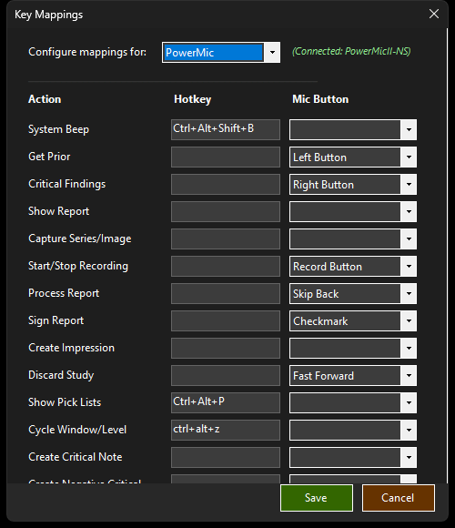

Auto Measure
Point at a lesion in InteleViewer, press a button, and get an automatic bidimensional measurement drawn over the image — ready to paste into the report.

Aorta outer wall, non-contrast aorta 6.3.13
The aortic trace now measures the outer wall (lumen + thrombus + wall) with MosaicTools' An1 model (downloads 31 MB once, at the first aorta press; that first press still uses the older outline). With it, Vessel trace also works on a non-contrast aorta: it shows the largest diameter and its image number, without branch landmarks.
Spleen size, Liver size, faster HU 6.3.12
- Spleen size and Liver size: when you measure in or near the spleen or liver on a CT, the box gets a button. One click measures the whole organ through the series: AP x lateral x CC first, then the published limits (spleen: CC 13 cm, splenic index 725, coronal oblique 12 cm; liver: CC 19 cm, and volume against 14 x weight + 979 mL when the scan carries the weight). Green = all normal, pink = all enlarged, amber = mixed. "At least" means the series ends inside the organ.
- Vessel trace and the organ buttons are now on everyone's Auto Measure box. When one cannot run, the box itself says why (for example a non-contrast aorta, which needs the outer-wall model).
- HU shows on almost every press and no longer waits: the caliper comes at once, the HU follows.
Fast again, HU on the first press, clearer lesion answers 6.3.10
- The caliper no longer waits for InteleViewer or the vessel check: the True Size Zoom reading is used unless InteleViewer answers within a moment.
- HU on the first measurement of a patient, and from MosaicTools' own copy of the image when InteleViewer is slow (the same image, study and series as on screen).
- A kidney lesion with fat (-10 HU or less on any phase) reads "angiomyolipoma". The adrenal box gives one answer line (adenoma, adenoma? or indeterminate adrenal nodule) and one reason per line under it.
- No "ovary" call on chest or shoulder slices.
- Auto Measure can no longer be put on a floating button: it measures under the mouse, so it needs a key or a mic or mouse button.
Zoom in the lesion picker, faster current study 6.3.9
- In the picker that opens from a fix button, each picture has + and - in its top right corner to zoom it.
- The current study's images are read first, and the series on screen goes first.
- Pressing Auto Measure no longer waits behind background reads.
More InteleViewer versions 6.3.7
- InteleViewer Direct now works on InteleViewer 5.8.1.434 as well as 5.4.1.519 and 5.8.1.389.
- On 5.4.1.365 and 5.4.1.289 it starts in a checking mode: the screen reading decides every number, and InteleViewer Direct reads the same image in the background. After enough matching reads on your PC it switches itself on. One reading that disagrees turns it off on that PC until the next MosaicTools version. Nothing changes in how you work.
- The series panel keeps the right Current study when a prior loads late or is dragged into a pane.
- A study that InteleViewer holds twice no longer slows the series panel and Auto Measure.
Picking the organ, and two InteleViewers 6.3.5
- Click the organ name in the box (for example "pancreas tail") to pick the right organ from a short list: the organs the lesion was found in on the other phases come first, then the anatomy within about 3 cm, and the adrenal gland on that side. The lesion type is worked out again with your choice.
- The phases vote: when two other phases agree on an organ that differs from the measured slice's, their organ is used. A phase is never dropped because the anatomy model named a nearby organ on it.
- Organ names are written out ("left adrenal gland"). When MT cannot decide the lesion type, it shows no type line; the "check:" notes sit on their own line under the conclusion.
- Two InteleViewer programs open at once (for example one per server): InteleViewer Direct reads the one you measure in, and switches when you move to the other. If MT cannot tell which one you measured in, that measurement uses the screen-only path.
Vessel trace (aorta and carotids) 6.3.3
Press Auto Measure on the aorta or a carotid on a contrast CT, and the box traces the vessel instead of measuring a lesion. It shows the vessel straightened out, with the levels marked in a column to its right.
- Abdominal aorta: the renal arteries, the celiac axis and SMA, the iliac bifurcation, the largest infrarenal diameter, and for an aneurysm its length and its neck (the distance below the lower renal artery).
- Carotid: the bifurcation and a reference point in the distal cervical ICA. The carotid part is a first version: check the marks before you use a number.
- Since 6.3.5 the aorta's largest diameter is taken at the right level: a branch inside an aneurysm sac, or one bad slice, no longer sets it. When the aneurysm reaches the renal level, the box says to check the renal arteries.
- When MT is not sure the press was on a vessel, the lesion box opens. Its small Vessel trace button switches to the trace.
Series panel changes: the panel is now off by default (turn it on under "Show series panel"), and it can be anchored to the top or the bottom of its position. Priors start to load as soon as a study opens; the current study always loads first.
Late-retrieved priors 6.3.1
A prior that InteleViewer retrieves late and opens in its own group (same patient) is now treated like any other prior: it gets its own box in the series panel and the same background analysis, and the phase guess no longer calls a second series "delayed" next to one already named delayed.
InteleViewer Direct, priors and the series panel 6.3.0
InteleViewer Direct (on by default) reads the measured image straight from InteleViewer: the exact pixel size, the Se/Im numbers and the pixel values. No screen reading is needed, and True Size Zoom becomes the backup for when a read fails. With it, the measurement box also shows:
- HU of the lesion (from its central half), and its HU on the other contrast phases of the study, with a small picture of each.
- What the lesion is: simple cyst, hyperdense cyst, enhancing, or adrenal adenoma, with the organ under it.
- Priors: the same lesion on every prior InteleViewer has loaded, with its size, picture and the change against the oldest one. InteleViewer's own link is used when there is one; without a link, the body level is found by anatomy. An unsure match is shown with "?" and a fix button: click it and pick the right spot.
- Uncheck a prior in InteleViewer's study navigator and it leaves the Priors box (and the series panel); check it again and it comes back. A prior of another modality (an X-ray for a CT) is never compared.
The series panel lists every series of the study and its priors with the phase, contrast, dose and analysis progress. Shrink keeps only the analysed series; Close hides it until the next study; drag it anywhere; click a phase to correct it.
It refuses rather than measure the wrong thing 6.0.21
If the outline the model produces does not contain the pixel you clicked, Auto Measure now declines and shows the engine caliper instead.
Before, it fell back to the largest shape in the window. On a view centred on your click, that is the structure NEXT TO the one you meant whenever your target is the smaller of the two — so it returned a confident measurement of the wrong thing. You still get a measurement either way; it is just no longer a made-up one.
Measured on the full measurement corpus: 402 of 409 still measured, 7 refused, and every one of those seven was a genuine miss.
What it does
Auto Measure captures the region of the InteleViewer image around your cursor, finds the lesion under it, and draws a bidimensional measurement overlay (long axis + perpendicular short axis, with the numbers) right on top of the image. The boundary comes from an adaptive region-growing method with edge-snap refinement, and the long axis is the largest diameter across that boundary with the short axis perpendicular through its middle — the way RECIST asks for it. Calibration is ruler-free: measurements derive from the workstation's monitor pitch and the true-size zoom level, so you don't need the on-screen ruler overlay for it to be accurate.
How accurate it is 6.0.14
The caliper lands within 2 mm of where you would put it 70% of the time, up from 60%, measured on the measurements radiologists have accepted so far and scored only on the ones where the truth came from a person rather than from the model itself.
It is retrained as that collection grows. When it is wrong it is usually wrong by a little: drag a handle and press accept, and that correction is what the next version learns from.
How to turn it on / set it up
Map the Auto Measure action to a PowerMic/SpeechMike button or hotkey under Settings → Keys & Buttons. There's no separate enable toggle — the action does the work.
Where the calipers come from 6.0.13
The measurement is now drawn by AM1, a model trained on the measurements radiologists have accepted, rather than by the older shape-matching code. It looks exactly the same — same colours, same two lines — and you can still drag the four ends to correct it before accepting.
If the model cannot measure what is under your cursor, the older measurement is shown instead, so you never get nothing.
Contributing your measurements (new in 5.9.7, off by default)
Settings → Profile → Share Auto Measure diagnostics — my accepted images. This is the one setting that changes how the feature behaves for you, so it is worth reading before you tick it:
- The calipers stay on screen with Accept and Reject buttons instead of fading after about five seconds, and you can drag the four ends to correct them first.
- Only what you Accept is sent. Anything you reject, or click away from, is deleted immediately — no image, no record.
- Everything outside a 3 cm border around the measurement you confirmed is blacked out before the image is saved. That removes the viewer's corner overlays, where the accession, patient name and study date are shown. The blacked-out image is then checked by text recognition, and the record is thrown away if any readable text is left.
- Your accession is never included, and your signed report is never included. The study description (for example "CT ABDOMEN PELVIS") is, because a measurement cannot be interpreted without knowing what was scanned.
- One-way and opt-in. It is a separate decision from the Spine Labeling contribution above it — ticking one does not tick the other.
Using it
- Hover your cursor over the lesion in InteleViewer.
- Trigger Auto Measure.
- The measurement overlay appears over the lesion and auto-dismisses after a few seconds — three by default, and adjustable since 5.9.17 in Settings → Auto Measure (click, or press any mouse button, to dismiss early) — unless you have turned on contributing above, in which case it waits for Accept or Reject. Focus returns to InteleViewer the moment the measurement appears, so your tool-select mouse button keeps working — no need to click the image first.
- The measurement is available to paste into the report.
Measurements come back in well under a second.
Settings 6.3.0
Settings → Auto Measure now holds: Read sizes and density straight from InteleViewer (IV-Direct) (on by default), the True Size Zoom setup (the backup), Show outline, Leave measurements on screen (now on by default), Time left on screen (used only when measurements do not stay on screen) and Show the series panel when a study opens. The old IV-Direct and priors switches under Experimental are gone: the priors search is always on.
(5.9.17 — Settings → Auto Measure, just under Spine Labeling)
Auto Measure previously had no settings page of its own; its two controls were stranded in other sections, which is why they were hard to find.
Time left on screen — how long a measurement stays visible before fading. Three seconds by default (it used to be a fixed five). Whatever you set, the measurement still disappears the instant you press a mouse button, so reaching for an InteleViewer tool is never blocked. This is only the idle timeout.
Leave measurements on screen (experimental) — instead of fading, each measurement stays painted on the image you took it on. MosaicTools records which image you measured and watches InteleViewer's image counter, so a measurement is drawn only while that exact image is displayed: scroll off it and the caliper goes, scroll back and it returns.
Every measurement in the study is kept, so scrolling through a series lights each one up as you reach it — including measurements in different series in different viewports, which are tracked separately. They are cleared when you move to the next study, and measuring the same lesion again replaces the old answer rather than leaving both on screen.
It needs InteleViewer's image counter (
Im: 12/240) visible in the viewport — without it there is nothing to watch, and measurements fade as usual.Why experimental: the caliper is pinned to a position on screen, so panning or zooming the image moves the anatomy out from under ink that stays where it was.
Tips & gotchas
It measures what it can segment — a lesion with almost no contrast against its background may get a poor boundary. Always eyeball the overlay before dictating the number.
Since 5.5.30 each measurement re-reads the current True Size Zoom at the moment you trigger it, so changing the on-screen zoom between measurements can no longer reuse a stale calibration and oversize the result (a 3 cm lesion could previously read ~4 cm off an old zoom). If the zoom can't be read it declines with "cannot calibrate" rather than pasting a wrong number.
With Leave measurements on screen on, panning or zooming moves the image but not the painted caliper. Scroll away and back to clear it, or re-measure.
Works with InteleViewer rulers in either yellow or orange (used only for legacy calibration; the pitch-based calibration is the default).
Retrained in 5.9.12: the measurement model was retrained on every caliper you accepted or corrected in the Measure Editor. How the feature works is unchanged - only the model behind it.